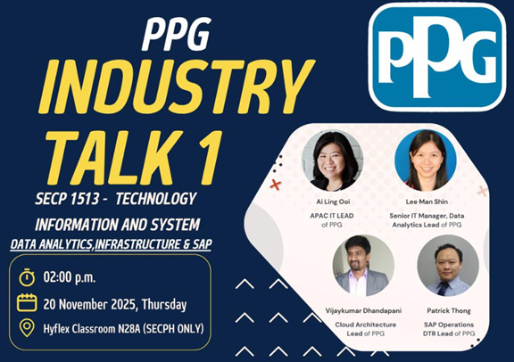

Industrial Talk 1 by PPG
PPG Digital Infrastructure & Data Analytics
Reflection on PPG Industrial Talk: Digital Infrastructure & Data Analytics
On 20th November 2025, our lecturers managed to host an industrial talk at our faculty by the PPG Industries, who are very known for their paint and coating manufacturing company. Mr Vijaykumar Dhandapani, Mr Patrick Thong, Madam Lee Man Shin and Madam Ai Leng Ooi were speaker of the talk, they were having the talk on Digital Infrastructure & Data Analytics. By listening to their talk, I had a glimpse of look into how a global company ultimately utilises the technology to drive their business effectively and efficiently. They mentioned their “One PPG” transformation strategy, which uses SAP S/4 Hana to process and centralise their data on a global scale. It was really an eye-opener for me to see how they were embracing multi-cloud, such as Azure, Aws and Oracle, to be more stable and secure. They really highlighted the essential skills for succeeding in this modern Computer Science era.
We also did a Poster for this Industrial Visit. Click Here for the Poster.
Industrial Talk 1
Date : 20th November 2025
Day : Thursday
Talk Title: PPG Information System (Data Analytics, Infrastructure & SAP)